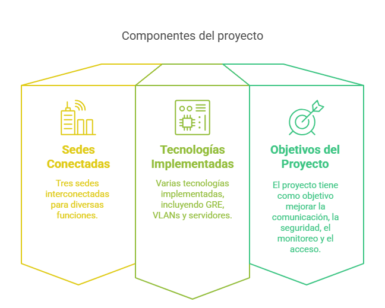
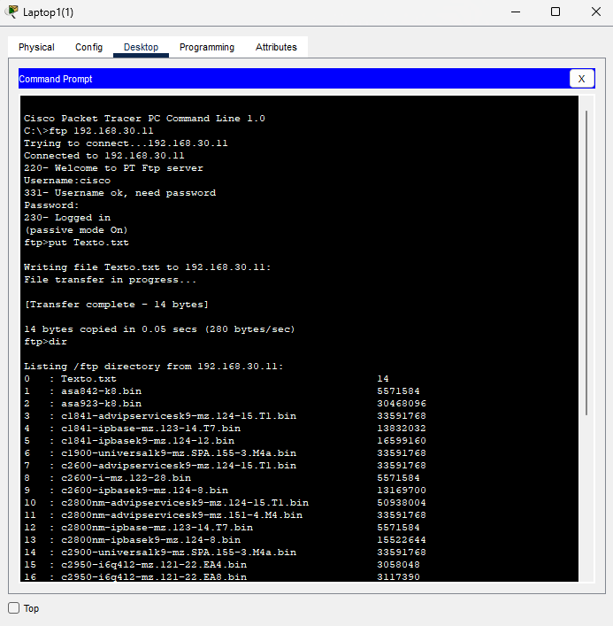
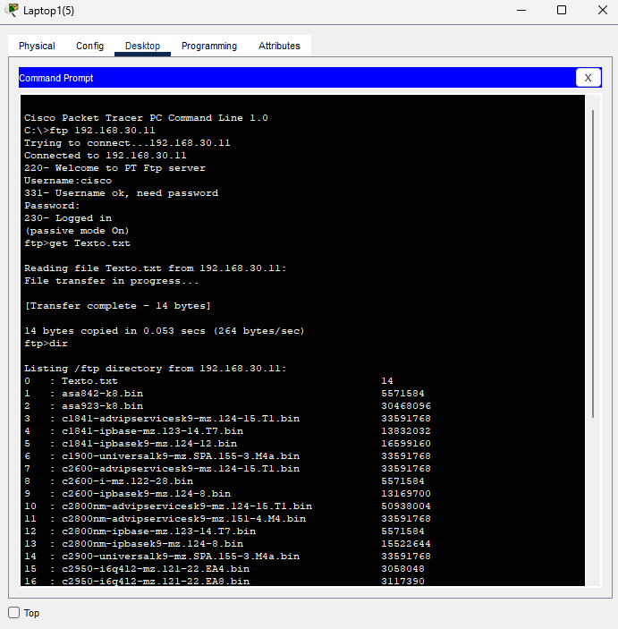
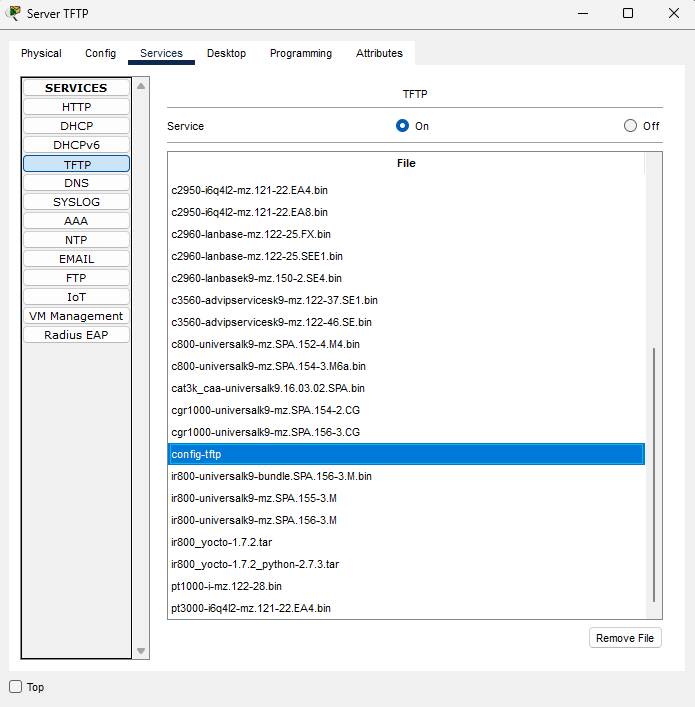
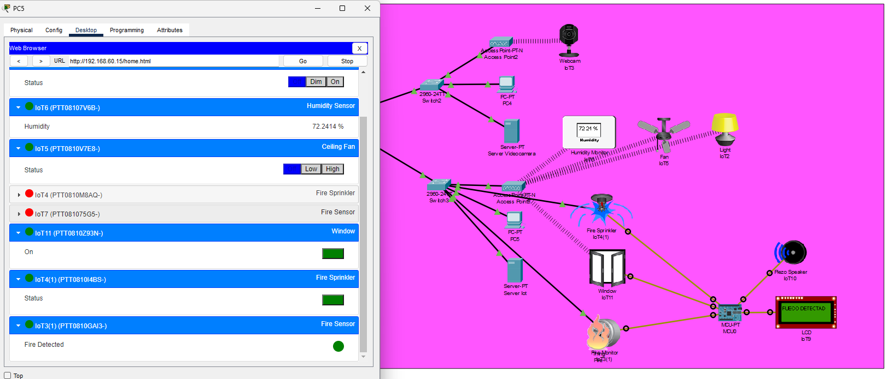

Red de Servicios Municipales Inteligentes

Descripción del Proyecto
Este proyecto implementado en Cisco Packet Tracer representa una red de telecomunicaciones que conecta tres sedes municipales:
Sede Central, Sede Seguridad y Sede Ciudadana. Cada una de estas sedes cumple funciones específicas
orientadas a servicios esenciales para la ciudadanía, la administración pública y la seguridad.
La infraestructura está compuesta por routers, switches, VLANs, servidores y dispositivos finales. Se ha implementado túneles, VPN,
IPsec y ACLs para garantizar la seguridad de la red.
Además, se incluyen tecnologías como:
- VLANs por departamentos: segmentación de redes para seguridad y eficiencia.
- Servidor FTP, HTTP, DNS y video streaming: acceso a servicios multimedia y administrativos.
- IoT y videovigilancia: mediante cámaras IP y sensores simulados en la sede de seguridad.
- Enlaces WAN simulados: entre las sedes, con políticas de cifrado para la transmisión segura de datos.
Esta red cumple los objetivos clave de una ciudad inteligente: garantizar la comunicación interna del gobierno,
proteger a los ciudadanos, monitorizar el entorno urbano y ofrecer servicios digitales de calidad.
Demostración del Servicio FTP
Para demostrar el funcionamiento del servicio FTP, desde el Command Prompt del PC se utilizan los comandos put y get para subir y descargar archivos:
- put: Subir un archivo al servidor.
- get: Descargar un archivo del servidor.
Si ambos comandos funcionan correctamente, el servicio FTP está operando según lo esperado.

En esta imagen se ve cómo se ha añadido un archivo llamado Texto.txt al servidor.

En esta imagen se visualiza la correcta descarga del archivo Texto.txt desde otro PC.
Demostración del Servicio TFTP
Para usar este servicio se emplea el siguiente comando desde un router para transferir su configuración al servidor TFTP:
Copy running-config tftp:
Address or name of remote host []? 192.168.1.2
Destination filename [netizzan-confg]?
Writing running-config....!!
[OK - 718 bytes]
718 bytes copied in 3.252 secs (220 bytes/sec)
Esto demuestra que el servidor ha sido capaz de recibir la configuración del router correctamente.

Demostración del Servidor IoT
En esta red inteligente, se ha incorporado un Servidor IoT que centraliza la gestión y control de sensores, cámaras y actuadores inteligentes. Este servidor permite iniciar sesión, monitorear dispositivos y activar respuestas automáticas ante condiciones como detección de fuego, humedad o movimiento.

Esta imagen muestra la pantalla de inicio de sesión del servidor IoT en la IP 192.168.50.13. Solo los usuarios registrados pueden acceder al panel de control de dispositivos inteligentes.

Una vez iniciada la sesión, se puede acceder a cámaras activas y sensores que permiten la supervisión remota, como se observa en esta interfaz con una cámara en funcionamiento.

Aquí se puede observar la operación de múltiples dispositivos IoT en tiempo real, como sensores de fuego, aspersores, ventanas inteligentes, ventiladores y sensores de humedad, todos integrados en una única red inteligente.